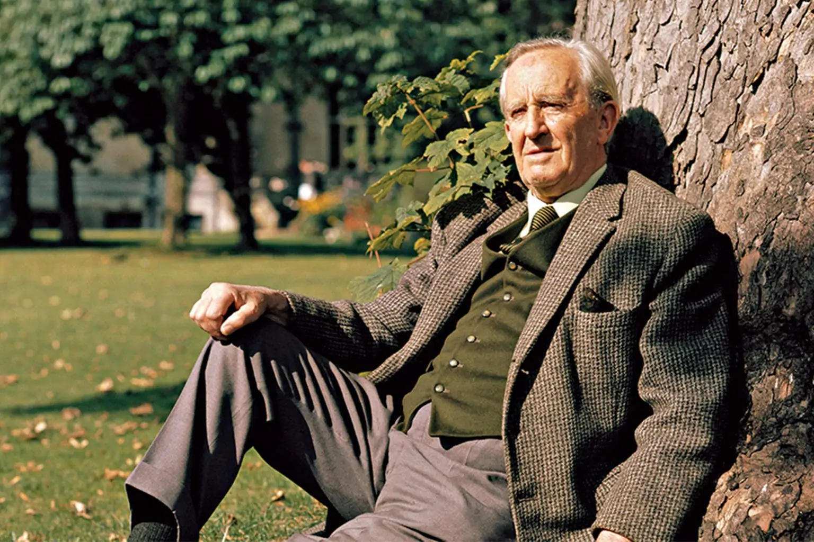

- Autor trilógie Pán Prsteňov, Hobbit, Silmarillion
- Narodil se 3. ledna 1892 v Bloemfonteinu
- Ve věku tří let odcestoval do Anglie spolu s matkou, která nemohla přivyknout africkému podnebí.
- Ve věku čtyř let uměl číst a brzy nato i psát. Krátce navštěvoval Školu svatého Filipa, absolvoval Školu krále Edwarda v Birminghamu i Exeterskou kolej v Oxfordu.
- V roce 1904, když bylo Tolkienovi 12 let, zemřela jeho matka na cukrovku.
- Jako sirotek byl vychováván knězem Francisem Xavierem Morganem z birminghamské Oratoře ve čtvrti Edgbaston
- V 16 letech se zamiloval do Edith Brattové (později se stala předlohou pro postavu Lúthien) a navzdory mnoha překážkám se s ní oženil. Po celý zbytek života zůstala jeho jedinou láskou.
- V roce 1911 začal studovat na Oxfordské univerzitě a v roce 1915 dosáhl akademického titulu první třídy a dne 22. března 1916 se John Ronald Reuel Tolkien oženil s Edith Brattovou.
- Zuřila první světová válka a Tolkien dobrovolně vstoupil[8] do armády k pluku Lancashirských střelců.
- Po válce pracoval Tolkien nejprve na Novoanglickém slovníku (New English Dictionary, nyní Oxford English Dictionary). V roce 1920 se přestěhoval do Leedsu, kde na katedře angličtiny tamní univerzity dosáhl (1924) titulu profesora, ale roku 1925 se vrátil zpět do Oxfordu, kde byl jmenován profesorem anglosaštiny. Roku 1945 se na Mertonově koleji v Oxfordu stal profesorem anglického jazyka a literatury a zůstal zde až do svého odchodu do penze v roce 1959.
- Tolkien a Edith sdíleli hlubokou lásku k rodině, měli spolu čtyři děti. Po smrti své ženy Edith 29. listopadu 1971 se Tolkien odstěhoval zpět na Merton Street. 28. března 1972 obdržel od královny Alžběty II. Řád britského impéria a Oxfordská univerzita mu udělila čestný doktorát z literatury.
- Dne 2. září 1973 John Ronald Reuel Tolkien ve věku 81 let zemřel.
JRR Tolkien
